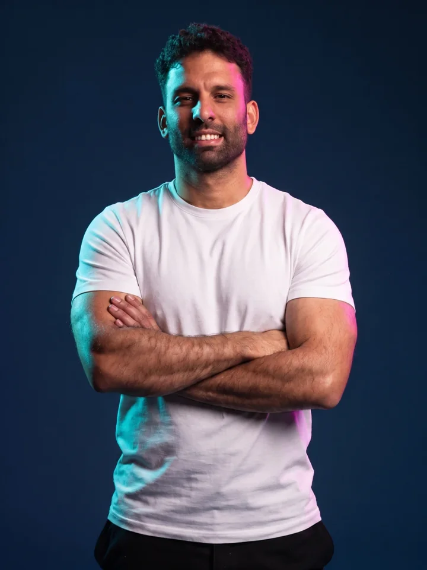
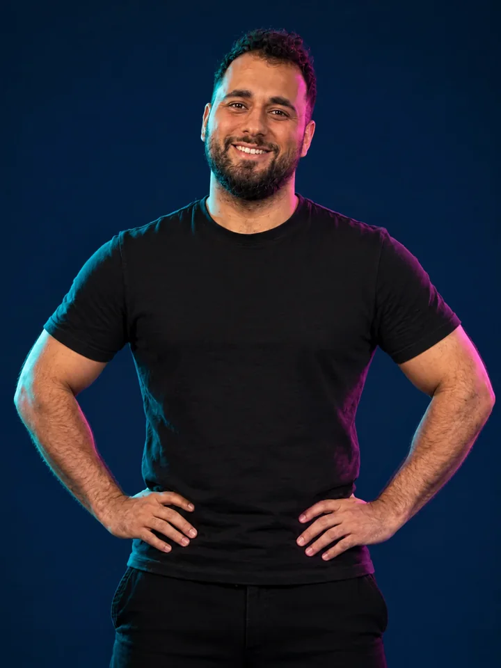

כתיבה והפקת תוכן ויראלי
אנחנו מגיעים אליך לשטח ויוצרים עבורך סרטונים שמושכים מאות ואלפי תגובות ושיתופים. המטרה: ויראליות ברשתות, והמון עוקבים חדשים לעמוד שלך.
אחרי 7 שנים בתעשיית הפרסום הממומן והשיווק הוויראלי, פיצחנו את ה-״DNA״ לבניית מותג צומח ברשתות.
שריין שיחת ייעוץ ללא עלות

יהונתן טויטו · אסטרטגיה ומספריםחגי ניזרי · תוכן ושטח
ארבעה תחומים שעובדים ביחד, תחת קורת גג אחת.
אנחנו מגיעים אליך לשטח ויוצרים עבורך סרטונים שמושכים מאות ואלפי תגובות ושיתופים. המטרה: ויראליות ברשתות, והמון עוקבים חדשים לעמוד שלך.
קמפיינים ממומנים ברשתות החברתיות שמביאים לך פניות מאנשים שבאמת מחפשים את מה שאתה מוכר, ודוח כל חודש שמראה לך כמה עלה כל ליד.
יושבים איתך על המספרים של העסק, מבינים מאיפה מגיעים הלקוחות ואיפה הכסף נוזל, ובונים תוכנית שיווק שמתאימה לתקציב שלך.
הופכים אותך לפנים של העסק: הסיפור שלך, הסגנון שלך והתוכן שלך. ככה לקוחות מגיעים אליך כשהם כבר מכירים אותך וסומכים עליך.
תוך 60 יום עליתי ב-30 מנויים. אני כבר לא בלחץ להשיג לקוחות, לא מפחדת להעלות את המחיר שלי, ואני בטוחה בעצמי ובעסק.
משאירים פרטים, ואנחנו חוזרים אליך לתיאום שיחה.
סיפור האהבה שלי עם עולם העסקים והשיווק נמשך כבר יותר מ-7 שנים. עבדתי עם מאות בעלי עסקים, ועמדתי מאחורי הפקות מפורסמות שהכניסו מיליוני שקלים: וובינרים, מכירת קורסים דיגיטליים, ומערכי שיווק מכל סוג שרק אפשר לחשוב עליו.
אני מאמין שהצלחה היא מדע מבוסס נתונים, ואמונה. כל עסק צריך להכיר את המספרים שלו, להבין אותם ולהאמין שזה באמת אפשרי, ומשם השמיים הם הגבול.
את הדרך שלי בעולם הפרסום התחלתי כצלם ועורך וידאו, ומהר מאוד גיליתי את כוח העל האמיתי שלי: אנשים. מסתבר שיש לי יכולת בלתי מוסברת לגרום לכל אדם להיזכר מה הקסם המיוחד שלו, אותו קסם שגורם לאנשים להתאהב בו ולהתחבר אליו.
כשאני נפגש עם אנשים בשטח, אנחנו מוצאים את הבידול שלהם ביחד, והופכים את הסיפור האישי לתוכן שנוגע במאות אלפי ישראלים וגורם להם לשתף, לעקוב ולהתחבר.
הכנו הדרכות חינמיות שיעזרו לך להבין איך מערך שיווק חזק ויציב עובד ב-2026.

במחלקת השיווק בעסק, בעזרת כתיבה והפקה של סרטונים ממירים שבונים סמכות ב-60 עד 80 שניות. בהדרכה הזו תלמדו:

כדי לשווק טוב ולהביא לקוחות מדויקים, אתה צריך לחשוב בדיוק כמו הלקוח הפוטנציאלי שלך, ולהתאים לו את המסרים שהוא צריך לשמוע כדי להשאיר פרטים.
לא כל קהל הוא הקהל שלכם. ננתח ונבין מי הקהל הרלוונטי עבורכם.
שתתרום לעסק שלכם הלכה למעשה ותותאם בדיוק עבורכם.
נפדבק אתכם בזמן אמת כדי שתצליחו לסגור יותר עסקאות.
תרגולי מכירות וסימולציות אמיתיות מהשטח, בשווי אלפי שקלים, שנועדו למקסם את ההצלחה שלכם.
כזה שיודע לתת מענה לכל היבט בעסק: שיווק, מכירות, תמחור, אסטרטגיה שיווקית, ניהול קמפיינים ועוד.
בלי שתצטרכו לצאת החוצה ולחפש עורכים שבדרך כלל לא מחוברים למהלך העסקי והשיווקי שלכם. אנחנו נדאג שהכל יהיה מהודק מא׳ ועד ת׳.
בניית מותג עם ת״ז בלתי נשכחת, שתאפשר לכם לחמם את הלידים וליצור משפכים אורגניים. כי אין דבר חזק יותר מקהילה חזקה.